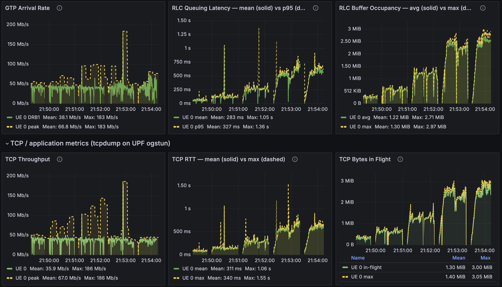
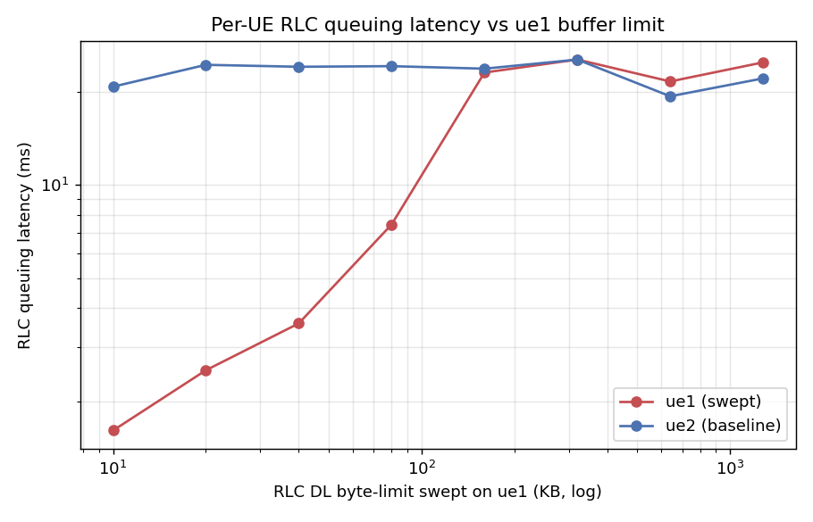
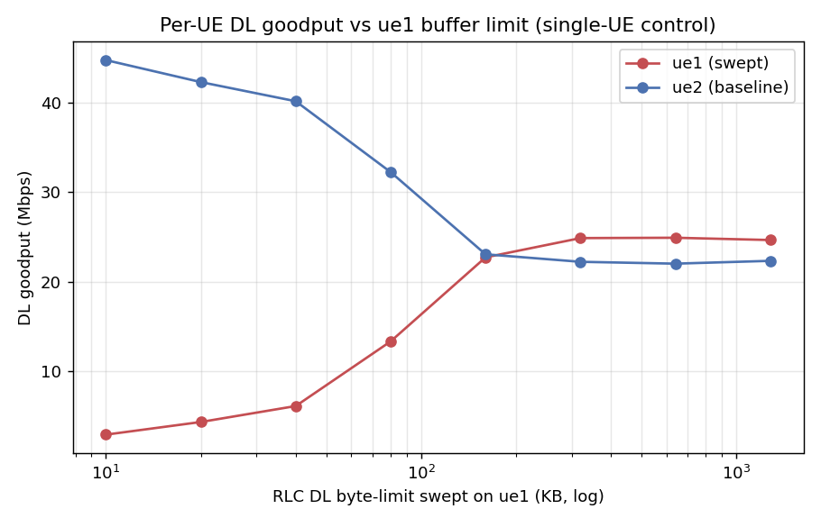
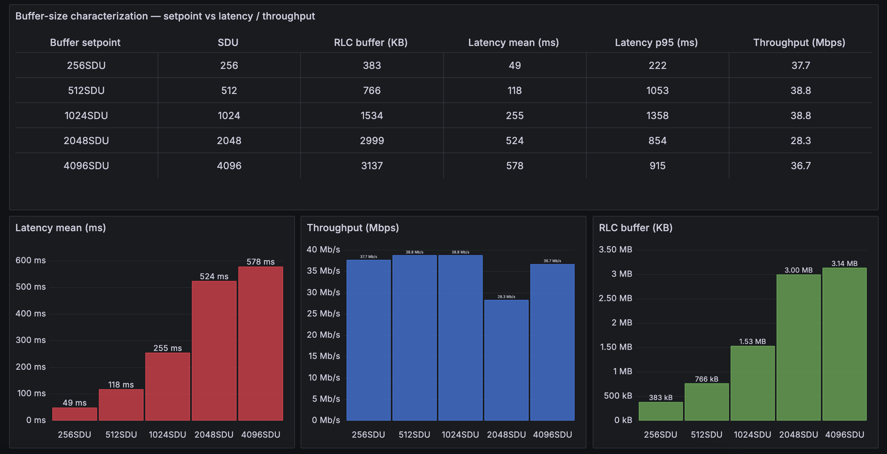
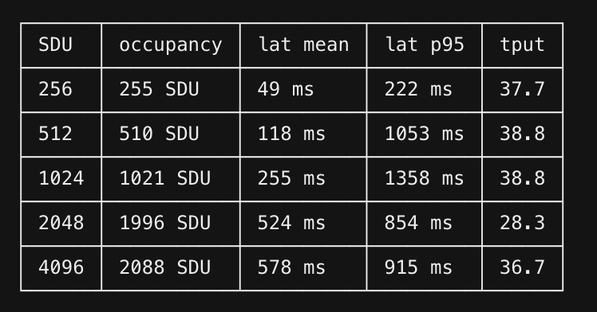

Open AI-RAN Tutorial: In-RAN Telemetry and Control with jbpf Codelets¶
In this tutorial we bring up a complete 5G testbed inside a single k3d Kubernetes cluster — the
jbpf-instrumented OCUDU gNB, the jrt-controller (jrtc), an Open5GS core and four
Duranta OAI nr-UEs over ZMQ — and then use it as a platform for programmable, in-RAN
observability and control.
The programmable unit is a codelet: a small eBPF program that is loaded at runtime into the running gNB, attached to a hook on the RAN datapath, and unloaded again — without recompiling or restarting the gNB. Codelets that only read the datapath are telemetry codelets; codelets that write back into the RAN’s own structures are control codelets. Both are the same mechanism.
The tutorial is in three parts:
Part |
What you do |
Key artifacts |
|---|---|---|
Load and unload example codelets (MAC stats), then start the dashboard and visualize live per-UE telemetry |
|
|
Write new codelets: RLC telemetry, and per-packet telemetry — RLC queuing latency and RLC buffer occupancy |
|
|
Write a control codelet: dynamic RLC buffer management that actuates the gNB from userspace |
|
Code: https://github.com/ucsdwcsng/scout-jbpf (branch open-ai-ran-tutorial)
Architecture¶
┌───────────────────────── k3d cluster: janus-cluster ─────────────────────────┐
│ │
│ ns: open5gs ns: ran │
│ ┌───────────────┐ N2/N3 ┌────────────── pod: srs-gnb-du1-0 ───────────┐ │
│ │ AMF SMF UPF │◄─────────►│ ocudujbpf : OCUDU gNB (+ jbpf agent) │ │
│ │ NRF UDM PCF │ │ grbroker : GNU Radio ZMQ broker │ │
│ │ MongoDB │ │ durue1 : 4x Duranta OAI nr-UE (netns) │ │
│ └───────────────┘ └───────────────┬─────────────────────────────┘ │
│ │ jbpf IPC (/dev/shm, /tmp/jbpf) │
│ ┌───────────────▼──────────────┐ │
│ │ pod: jrtc-0 │ │
│ │ jrtc : jrt-controller │ │
│ │ + python xApps │ │
│ │ jrtc-decoder : protobuf │ │
│ └───────────────┬──────────────┘ │
│ │ InfluxDB line protocol │
│ ┌───────────────▼──────────────┐ │
│ │ VictoriaMetrics :30491 │ │
│ │ Grafana :30490 │ │
│ └──────────────────────────────┘ │
└──────────────────────────────────────────────────────────────────────────────┘
Part 0: Bring up the testbed¶
Everything below runs on one Linux host with docker, k3d (v5+), kubectl, helm (v3+), and
git; the user must be in the docker group. ~8 CPU cores are recommended — the ZMQ software
radio is real-time sensitive.
Clone and set up the environment¶
Terminal 0
git clone -b open-ai-ran-tutorial git@github.com:ucsdwcsng/scout-jbpf.git
cd scout-jbpf
git submodule update --init --recursive # ocudu-jbpf (the RAN) + jbpf_protobuf (the SDK)
export REPO_ROOT="$(pwd)"
export CLUSTER=janus-cluster
Run these three exports in every new terminal you open for this tutorial:
export REPO_ROOT=/path/to/scout-jbpf
export CLUSTER=janus-cluster
export KUBECONFIG="$(k3d kubeconfig write "$CLUSTER")"
Create the cluster¶
k3d cluster create "$CLUSTER" \
--volume "$REPO_ROOT:$REPO_ROOT" \
--port "30400-30500:30400-30500@loadbalancer"
export KUBECONFIG="$(k3d kubeconfig write "$CLUSTER")"
# Multus CNI (the RAN pods use it)
kubectl apply -f https://raw.githubusercontent.com/k8snetworkplumbingwg/multus-cni/master/deployments/multus-daemonset-thick.yml
kubectl wait --for=condition=ready pod -l app=multus -n kube-system --timeout=120s
The --volume bind-mount makes built binaries persist on the host across pod restarts. The
30400-30500 port range is published to the host, which is how you will reach Grafana later.
Deploy the 5G core and the subscribers¶
kubectl create namespace open5gs
helm install open5gs "$REPO_ROOT/open5gs" -n open5gs -f "$REPO_ROOT/open5gs/values-5g.yaml"
kubectl wait --for=condition=ready pod -l app.kubernetes.io/name=mongodb -n open5gs --timeout=180s
# pcf/udr start before mongodb is ready - restart them once
kubectl get pods -n open5gs --no-headers | awk '/pcf|udr/{print $1}' | xargs -r kubectl -n open5gs delete pod
kubectl get pods -n open5gs -w # Ctrl-C when all pods are 1/1
Add the four subscribers (PLMN 99970, IMSIs ...001–...004):
POP=$(kubectl get pods -n open5gs --no-headers | awk '/populate/{print $1}' | head -1)
K=00112233445566778899aabbccddeeff
OPC=63bfa50ee6523365ff14c1f45f88737d
for IMSI in 999700000000001 999700000000002 999700000000003 999700000000004; do
kubectl exec -n open5gs "$POP" -- open5gs-dbctl add "$IMSI" "$K" "$OPC"
done
kubectl exec -n open5gs "$POP" -- open5gs-dbctl showall | grep -c imsi # expect 4
Deploy the RAN pod and the jrt-controller¶
sed "s#__REPO_ROOT__#$REPO_ROOT#g" \
"$REPO_ROOT/jrtc-apps/containers/Helm/k3d-values.yaml" > /tmp/k3d-values.local.yaml
kubectl create namespace ran
USE_JRTC=1 helm install ran "$REPO_ROOT/jrtc-apps/containers/Helm" -n ran \
-f "$REPO_ROOT/jrtc-apps/containers/Helm/jrtc.yaml" \
-f /tmp/k3d-values.local.yaml
kubectl -n ran rollout status statefulset/srs-gnb-du1 --timeout=300s
kubectl get pods -n ran # srs-gnb-du1-0 and jrtc-0 both Running
This deploys the scaffolding: the gNB pod (with the jbpf IPC volumes and the srs-gnb-du1-proxy
service) and jrtc-0. The gNB binary itself runs as an ephemeral container in that pod, added
below.
Build the images (one time, ~20 min)¶
# 0a. GNU Radio broker
docker build -t gnuradio-broker:local "$REPO_ROOT/broker"
k3d image import gnuradio-broker:local -c "$CLUSTER"
# 0b. OCUDU + jbpf gNB (~15 min, clang-18)
( cd "$REPO_ROOT/ocudu-jbpf" && ./build.sh )
k3d image import ocudu-gnb-jbpf:local -c "$CLUSTER"
# 0c. Duranta OAI nr-UE (ZMQ)
docker build -t duranta-nr-ue:local "$REPO_ROOT/duranta-oai-ue"
k3d image import duranta-nr-ue:local -c "$CLUSTER"
# 0d. The codelets themselves (.o files are gitignored, so this is required)
cd "$REPO_ROOT/jrtc-apps/codelets"
for d in rlc mac pdcp ngap rrc ue_contexts perf edgeric bufsize l4span upt; do ./make.sh -d "$d"; done
cd "$REPO_ROOT"
Each codelet should print Program terminates within N instructions — that line is the jbpf
verifier accepting the program. If you instead see Failed verification, the codelet will not
load; see Writing a codelet for the usual causes.
Start the radio¶
The gNB, broker and UEs run as ephemeral containers inside srs-gnb-du1-0. They share the pod
network namespace (so ZMQ talks over localhost) and the gNB shares /dev/shm + /tmp/jbpf with
jrtc-0 for the jbpf IPC.
# --- add the ephemeral containers (one time per pod) ---
kubectl debug -n ran srs-gnb-du1-0 --image=gnuradio-broker:local --image-pull-policy=IfNotPresent \
-c grbroker --target=gnb -- sleep infinity
kubectl debug -n ran srs-gnb-du1-0 --image=duranta-nr-ue:local --image-pull-policy=IfNotPresent \
-c durue1 --target=gnb --profile=sysadmin -- sleep infinity
# the gNB needs the jbpf IPC volume mounts, which `kubectl debug` cannot set:
kubectl patch pod -n ran srs-gnb-du1-0 --subresource ephemeralcontainers --type strategic \
-p "$(cat "$REPO_ROOT/ocudu-jbpf/deploy/ephem_jbpf.json")"
kubectl get pod -n ran srs-gnb-du1-0 -o jsonpath='{.status.ephemeralContainerStatuses[*].name}'; echo
Start fwd.py in jrtc-0. jrtc-ctl hard-codes 127.0.0.1:30450; fwd.py bridges that to
the gNB proxy service. Nothing in Parts 1–3 will load without it.
kubectl cp "$REPO_ROOT/ocudu-jbpf/deploy/fwd.py" ran/jrtc-0:/tmp/fwd.py -c jrtc
kubectl exec -n ran jrtc-0 -c jrtc -- bash -c \
'pkill -x python3 2>/dev/null; nohup setsid python3 -u /tmp/fwd.py >/tmp/fwd.log 2>&1 </dev/null & disown; sleep 1; cat /tmp/fwd.log'
Stage the configs and the codelet directories into the gNB container (the gNB’s jbpf agent loads
each codelet’s serde .so from /codelets/..., so the directory must exist inside the
ocudujbpf container, not just on the host):
GDIR="$REPO_ROOT/ocudu-jbpf/deploy"; UDIR="$REPO_ROOT/duranta-oai-ue"
kubectl cp "$GDIR/gnb_ocudu_jbpf.yml" ran/srs-gnb-du1-0:/tmp/gnb_ocudu_jbpf.yml -c ocudujbpf
kubectl cp "$UDIR/broker4_netns.py" ran/srs-gnb-du1-0:/tmp/broker4_netns.py -c grbroker
for n in 1 2 3 4; do kubectl cp "$UDIR/oaiue${n}_netns.conf" ran/srs-gnb-du1-0:/tmp/oaiue${n}_netns.conf -c durue1; done
kubectl exec -n ran srs-gnb-du1-0 -c ocudujbpf -- mkdir -p /codelets
for d in ue_contexts mac rlc pdcp rrc ngap upt edgeric bufsize; do
kubectl cp "$REPO_ROOT/jrtc-apps/codelets/$d" ran/srs-gnb-du1-0:/codelets/ -c ocudujbpf
done
Bring it up — the order matters: broker → gNB → UEs.
# 1) broker
kubectl exec -n ran srs-gnb-du1-0 -c grbroker -- bash -c \
'cd /tmp && nohup setsid python3 -u broker4_netns.py >/tmp/broker.log 2>&1 </dev/null & disown; sleep 3; echo broker:$(pgrep -x python3)'
# 2) OCUDU jbpf gNB - jbpf inits, registers to jrt-controller, then connects to the AMF
kubectl exec -n ran srs-gnb-du1-0 -c ocudujbpf -- bash -c \
'cd /tmp && nohup setsid /usr/local/bin/gnb -c gnb_ocudu_jbpf.yml >/tmp/gnb.stdout 2>&1 </dev/null & disown; sleep 12; \
grep -aoE "Registration succeeded|Connected to AMF" /tmp/gnb.stdout /tmp/gnb.log | tail -2'
# 3) per-UE netns + 4 UEs
kubectl cp "$UDIR/netns_setup.sh" ran/srs-gnb-du1-0:/tmp/netns_setup.sh -c durue1
kubectl exec -n ran srs-gnb-du1-0 -c durue1 -- bash -c 'mkdir -p /var/run/netns && bash /tmp/netns_setup.sh'
kubectl exec -n ran srs-gnb-du1-0 -c durue1 -- bash -c '
cd /opt/oai-nr-ue/bin
for n in 1 2 3 4; do
nohup setsid ip netns exec ue$n ./nr-uesoftmodem -O /tmp/oaiue${n}_netns.conf \
--band 78 --numerology 1 -r 51 -C 3489420000 --ue-scan-carrier -E >/tmp/ue$n.log 2>&1 </dev/null & disown
sleep 4
done'
What a successful attach looks like — four distinct TUN IPs:
kubectl exec -n ran srs-gnb-du1-0 -c durue1 -- bash -c \
'for n in 1 2 3 4; do echo -n "ue$n:$(ip netns exec ue$n ip -o -4 addr show oaitun_ue1 2>/dev/null|awk "{print \$4}") "; done; echo'
# ue1:10.45.0.2/24 ue2:10.45.0.3/24 ue3:10.45.0.4/24 ue4:10.45.0.5/24
ZMQ cannot reconnect mid-run. If you restart any one of broker / gNB / UEs, restart all three, in that order. SIGKILL-ing the gNB also leaves a stale jbpf IPC peer in the jrt-controller — wait a few seconds for jrtc to reap it, then start the gNB again.
Traffic¶
iperf3 servers run on the UPF; clients run per-UE inside each netns.
UPF=$(kubectl get pods -n open5gs -o name | grep -i upf | head -1); UPF=${UPF#pod/}
kubectl exec -n open5gs "$UPF" -- bash -c 'for p in 5201 5202 5203 5204; do nohup iperf3 -s -B 10.45.0.1 -p $p >/dev/null 2>&1 & done; echo servers up'
# concurrent DL (-R) on all 4 UEs
kubectl exec -n ran srs-gnb-du1-0 -c durue1 -- bash -c \
'for n in 1 2 3 4; do p=$((5200+n)); ip netns exec ue$n iperf3 -c 10.45.0.1 -p $p -t 30 -R >/tmp/dl$n.txt 2>&1 & done; wait; \
for n in 1 2 3 4; do echo "ue$n: $(grep receiver /tmp/dl$n.txt | tail -1 | grep -oE "[0-9.]+ [KMG]bits/sec")"; done'
Drop the -R for uplink. About 20 Mbit/s aggregate DL is the ZMQ software-radio ceiling with
4 UEs; a single UE can reach ~45 Mbit/s.
Part 1: Loading and unloading codelets¶
1.1 The two YAML files you need to understand¶
Everything in this tutorial is driven by two levels of YAML.
(a) The codeletset — a group of codelets that share state, live in codelets/<layer>/. It says
which .o binds to which hook, which maps are shared between them, and how the output is
serialized. Here is the shape, using the MAC statistics codeletset
(codelets/mac/mac_stats.yaml):
codeletset_id: mac_stats
codelet_descriptor:
# (1) the REPORTER - owns the output channels, runs on a periodic hook
- codelet_name: mac_stats_collect
codelet_path: ${JBPF_CODELETS}/mac/mac_stats_collect.o
hook_name: report_stats # <- periodic timer hook
priority: 1
out_io_channel:
- name: output_map_crc
forward_destination: DestinationNone
serde:
file_path: ${JBPF_CODELETS}/mac/mac_sched_crc_stats:crc_stats_serializer.so
protobuf:
package_path: ${JBPF_CODELETS}/mac/mac_sched_crc_stats.pb
msg_name: crc_stats
# ... output_map_bsr / output_map_phr / output_map_uci
# (2) the COLLECTORS - one per datapath hook, no output of their own;
# they accumulate into the reporter's maps via linked_maps
- codelet_name: mac_sched_crc_stats
codelet_path: ${JBPF_CODELETS}/mac/mac_sched_crc_stats.o
hook_name: mac_sched_crc_indication # <- fires on every CRC indication
priority: 1
linked_maps:
- map_name: stats_map_crc
linked_codelet_name: mac_stats_collect
linked_map_name: stats_map_crc
- map_name: crc_hash
linked_codelet_name: mac_stats_collect
linked_map_name: crc_hash
This collector / reporter split is the standard jbpf telemetry pattern: the hot-path codelets do
nothing but bump counters in a shared map, and one codelet on a periodic hook does the (relatively
expensive) serialize-and-emit. mac_stats.yaml has one reporter pair plus collectors on
mac_sched_crc_indication, mac_sched_ul_bsr_indication, mac_sched_ul_phr_indication,
mac_sched_uci_indication, mac_sched_harq_dl, mac_sched_harq_ul, and mac_sched_ue_deletion.
(b) The deployment — what you actually hand to jrtc-ctl, lives in jrtc_apps/<app>/. It names
the decoder, an optional python xApp, the jbpf device, and the codeletsets to load. The minimal
codelet-only form (no xApp — decoded JSON lands in the jrtc-decoder log):
Create jrtc-apps/jrtc_apps/mac/deployment_mac.yaml:
name: mac_stats
decoder:
- type: decodergrpc
host: jrtc-decoder.ran.svc.cluster.local
port: 20789
jbpf:
device:
- id: 1
host: srs-gnb-du1-proxy.ran.svc.cluster.local
port: 30450
codelet_set:
- device: 1
config: ${JBPF_CODELETS}/mac/mac_stats.yaml
jrtc_apps/* and codelets/* are bind-mounted into jrtc-0 as /apps and /codelets, so this
file is visible inside the pod immediately — no rebuild, no copy.
1.2 Load the MAC stats codeletset¶
Define this helper once per terminal:
JRTC() { kubectl exec -n ran jrtc-0 -c jrtc -- bash -c \
"export JRTC_APPS=/apps JBPF_CODELETS=/codelets; /jrtc/out/bin/jrtc-ctl $*"; }
Terminal 1 — load:
JRTC 'load -c /apps/mac/deployment_mac.yaml'
What to observe. A successful load prints, in order:
INFO[0000] loaded app id=1 startTime="..."
INFO[0000] successfully upserted proto package
INFO[0000] successfully associated stream ID
and the gNB registers the codelets on their hooks:
kubectl exec -n ran srs-gnb-du1-0 -c ocudujbpf -- \
grep -aoE "Registered codelet [a-z_0-9]+ to hook [a-z_0-9]+" /tmp/gnb.stdout | tail
Registered codelet mac_stats_collect to hook report_stats
Registered codelet mac_sched_crc_stats to hook mac_sched_crc_indication
Registered codelet mac_sched_bsr_stats to hook mac_sched_ul_bsr_indication
Registered codelet mac_sched_phr_stats to hook mac_sched_ul_phr_indication
Registered codelet mac_sched_uci_pdu_stats to hook mac_sched_uci_indication
Registered codelet mac_sched_dl_harq_stats to hook mac_sched_harq_dl
Registered codelet mac_sched_ul_harq_stats to hook mac_sched_harq_ul
and:
kubectl exec -n ran srs-gnb-du1-0 -c ocudujbpf -- grep -a "Codeletset is loaded OK" /tmp/gnb.log
Terminal 2 — run DL traffic (Part 0) and watch the decoded telemetry:
kubectl logs -n ran jrtc-0 -c jrtc-decoder --tail=40 -f
Each message is one periodic report carrying per-UE CRC / BSR / PHR / UCI / HARQ statistics — the MAC scheduler’s view of every UE, decoded from protobuf, live, from a gNB you did not restart.
1.3 Unload¶
JRTC 'unload -c /apps/mac/deployment_mac.yaml'
The hooks go back to being no-ops. The gNB never noticed.
Try it: load, unload, and re-load a few times while traffic runs — the point of the exercise is that instrumentation is now a runtime decision, not a build-time one. But do not churn rapidly: a tight load/unload loop can wedge the app-loader and stress the jbpf LCM.
1.4 Load/unload troubleshooting¶
Symptom |
Cause |
Fix |
|---|---|---|
|
|
restart it (Part 0) |
|
the app is already loaded |
unload first, then load |
gNB reports no |
the codelet dir is missing inside the |
|
|
the gNB’s jbpf agent died (usually an oversized codeletset descriptor) |
restart the gNB (and therefore broker → gNB → UEs) |
app loaded but codelets did not deploy |
partial unload left state behind |
delete the app by its numeric id: |
If jrtc-ctl fails specifically at the codelet-deployment step, you can drive the reverse proxy
directly:
# deploy
kubectl exec -it jrtc-0 -n ran -c jrtc -- curl -X POST -H "Content-Type: application/json" \
http://srs-gnb-du1-proxy.ran.svc.cluster.local:30450 --data @/tmp/codelet_payload.json # -> 201 Created
# remove (by codeletset_id)
kubectl exec -it jrtc-0 -n ran -c jrtc -- curl -X DELETE \
http://srs-gnb-du1-proxy.ran.svc.cluster.local:30450/mac_stats # -> 200 OK
1.5 Start the dashboard¶
The dashboard xApp is a python app running inside jrtc-0 that subscribes to all the layer
telemetry streams at once — UE contexts, MAC, RLC, PDCP, RRC, NGAP — correlates them per UE, and
emits per-UE JSON.
Use the OCUDU-tuned deployment, jrtc_apps/dashboard/deployment_ocudu.yaml. It differs from the
upstream deployment.yaml in two ways: the hosts/ports are the in-cluster service names, and the
FAPI codeletsets are omitted (OCUDU’s FAPI structs differ from the SDK-built codelets).
name: dashboard
decoder:
- type: decodergrpc
host: jrtc-decoder.ran.svc.cluster.local
port: 20789
app:
- name: dashboard
path: ${JRTC_APPS}/dashboard/dashboard.py
type: python
host: jrtc-service.ran.svc.cluster.local
port: 3001
modules:
- ${JRTC_APPS}/libs/ue_contexts_map.py
- ${JBPF_CODELETS}/mac/mac_sched_crc_stats.py
- ${JBPF_CODELETS}/rlc/rlc_dl_stats.py
# ... one generated python binding per proto
jbpf:
device:
- id: 1
host: srs-gnb-du1-proxy.ran.svc.cluster.local
port: 30450
codelet_set:
- device: 1
config: ${JBPF_CODELETS}/ue_contexts/ue_contexts.yaml
- device: 1
config: ${JBPF_CODELETS}/mac/mac_stats.yaml
- device: 1
config: ${JBPF_CODELETS}/rlc/rlc_stats.yaml
- device: 1
config: ${JBPF_CODELETS}/pdcp/pdcp_stats.yaml
- device: 1
config: ${JBPF_CODELETS}/rrc/rrc.yaml
- device: 1
config: ${JBPF_CODELETS}/ngap/ngap.yaml
Make sure the codelet directories it needs are inside the gNB container, then load:
for d in ue_contexts mac pdcp rrc ngap rlc; do
kubectl cp "$REPO_ROOT/jrtc-apps/codelets/$d" ran/srs-gnb-du1-0:/codelets/ -c ocudujbpf
done
JRTC 'unload -c /apps/mac/deployment_mac.yaml' # mac_stats is part of the dashboard set
JRTC 'load -c /apps/dashboard/deployment_ocudu.yaml'
Generate traffic, then watch:
kubectl logs -n ran jrtc-0 -c jrtc --tail=40 -f | grep -E "MAC_SCHED|RLC_|PDCP_|CRC"
Load the dashboard before attaching the UEs if you want the
imsi/ UE-context fields populated: theue_contextscodelets catch the RRC/NGAP attach events, which have already happened by the time a late-loaded codelet arrives.
Unload with the same YAML:
JRTC 'unload -c /apps/dashboard/deployment_ocudu.yaml'
1.6 Visualize: Grafana + VictoriaMetrics¶
JSON in a log is fine for a demo but not for looking at dynamics. The repo ships a metrics backend: an xApp converts each decoded message into InfluxDB line protocol, pushes it to VictoriaMetrics, and Grafana queries VM with PromQL.
codelet → jrtc → xApp (line protocol) → VictoriaMetrics :30491 → Grafana :30490
VictoriaMetrics is used instead of Prometheus because the data is pushed at sub-second granularity, and Prometheus’s pull model has a ≥1 s scrape floor that would destroy the resolution.
# dashboard JSON first - the Grafana pod mounts this ConfigMap
kubectl create configmap grafana-upt-dashboard -n ran \
--from-file=upt-dashboard.json="$REPO_ROOT/telemetry/upt-dashboard.json" \
--dry-run=client -o yaml | kubectl apply -f -
kubectl apply -f "$REPO_ROOT/telemetry/telemetry-stack.yaml"
kubectl rollout status deployment/grafana -n ran --timeout=120s
Open http://<host>:30490 → dashboard RAN User-Plane Telemetry (per-packet)
(uid upt-userplane). Both NodePorts sit inside 30400–30500, which k3d already publishes.
The panels are empty until Part 2 — they are fed by the codelets you are about to write. Once they are, one UE under DL iperf3 looks like this:

The top row is pure in-RAN telemetry from the codelets: GTP arrival rate, RLC queuing latency (mean
solid, p95 dashed) and RLC buffer occupancy (avg solid, max dashed). The bottom row is the same run
seen from outside the RAN — tcpdump on the UPF’s ogstun.
Keeping both rows on one dashboard is what makes the measurement checkable. In the run above, TCP RTT (mean 311 ms, max 1.55 s) tracks RLC queuing latency (mean 283 ms, max 1.36 s), and TCP bytes-in-flight (mean 1.30 MiB, max 3.05 MiB) tracks RLC buffer occupancy (mean 1.22 MiB, max 2.97 MiB) — two independent measurement paths, same curve. That agreement is the evidence that the RLC queue is where the latency lives, and it is the whole justification for Part 3.
Grafana silently refuses any refresh faster than
min_refresh_interval(default 5 s). The Deployment therefore setsGF_DASHBOARDS_MIN_REFRESH_INTERVAL=500ms; without it the dashboard’s"refresh": "500ms"is ignored.
Part 2: Writing new codelets¶
Part 1 loaded codelets somebody else wrote. Now we write our own, and we pick a measurement that the standard per-layer counters cannot give: where does a downlink packet actually spend its time, and how deep is the queue it waits in?
Three codelets, all downlink, all per UE per radio bearer:
Codelet |
Hook |
Measures |
|---|---|---|
|
|
DL arrival rate into the RAN |
|
|
RLC queuing latency (SDU arrival → start of transmission) |
|
|
RLC buffer occupancy (bytes and packets in the SDU queue) |
They live in jrtc-apps/codelets/upt/ (upt = user-plane telemetry) and are deployed by
jrtc_apps/upt/deployment_fixed.yaml.
2.0 Anatomy of a codelet¶
Every codelet is one .cpp with a single jbpf_main, compiled to BPF and verified:
#include <linux/bpf.h>
#include "jbpf_srsran_contexts.h" // the RAN context structs
#include "../utils/misc_utils.h"
#include "../utils/hashmap_utils.h"
#define SEC(NAME) __attribute__((section(NAME), used))
#include "jbpf_defs.h"
#include "jbpf_helper.h"
// output channel: a ring buffer typed by the protobuf message
jbpf_ringbuf_map(out_channel, my_stats, 16);
extern "C" SEC("jbpf_srsran_generic")
uint64_t jbpf_main(void* state)
{
struct jbpf_ran_generic_ctx* ctx = (jbpf_ran_generic_ctx*)state;
// 1. cast ctx->data to the layer's context struct
const jbpf_rlc_ctx_info& rlc_ctx = *reinterpret_cast<const jbpf_rlc_ctx_info*>(ctx->data);
// 2. MANDATORY bounds check - the verifier rejects the program without it
if (reinterpret_cast<const uint8_t*>(&rlc_ctx) + sizeof(jbpf_rlc_ctx_info) >
reinterpret_cast<const uint8_t*>(ctx->data_end)) {
return JBPF_CODELET_FAILURE;
}
// 3. do the work: accumulate into maps, or emit
return JBPF_CODELET_SUCCESS;
}
Rules the verifier enforces, and the ones that will actually bite you:
Bounds-check
ctx->dataagainstctx->data_endbefore touching it. Always.Loops must be bounded and provably terminating (
#pragma unrollwith a constant bound).No 64-bit division. Use shifts. This is why the bucketing below uses a power of two.
No
.rodata. A file-scopestatic const uint32_t TABLE[8]makes the loader emit a.rodatasection it does not relocate, and the verifier then reports 0 instructions. Use aswitchthat returns the value instead. (You will hit this in Part 3.)Every array access is masked (
arr[i % N]) so the verifier can prove it is in range.
2.1 The design decision: bucket inside the codelet¶
The naive design streams one IO message per packet. At 50 Mbps a single UE produces ~4167 pkt/s,
which is ~130 MB/s of IO per UE; the jbpf IO mempool is exhausted and jbpf_mbuf_alloc starts
failing with “error dequeuing memory from the mempool”.
So these codelets aggregate per-packet events into fixed time buckets inside the codelet and emit one protobuf message per bucket per stream. Per-packet accuracy is retained — every packet still updates the accumulators — but the output rate becomes independent of the traffic rate (~7.45 msg/s per stream at any load).
codelets/upt/upt_helpers.h:
// Bucket width as a power-of-two shift on the ns timestamp.
// A shift, not a division: 64-bit division is awkward for the eBPF verifier.
// 1 << 27 ns = 134.217728 ms
#define UPT_BUCKET_SHIFT (27)
#define UPT_BUCKET_NS (1ULL << UPT_BUCKET_SHIFT)
// Max (UE, radio-bearer) pairs tracked per bucket.
// MUST equal max_count in the .options files.
#define UPT_MAX_UE_RB (16)
// SRBs and DRBs share the small rb_id space; fold is_srb into the key so
// SRB1 and DRB1 land in distinct slots.
#define RBID_2_EXPLICIT(__is_srb, __rb_id) ((__is_srb) ? (__rb_id) : ((__rb_id) + 8))
The rollover logic is identical in all three codelets:
uint64_t now = jbpf_time_get_ns();
uint64_t bucket = now >> UPT_BUCKET_SHIFT;
if (*last_bucket != bucket) { // the bucket just closed
if (*last_bucket != 0 && out->stats_count > 0) {
out->timestamp = now;
out->bucket_id = *last_bucket;
jbpf_ringbuf_output(&out_channel, out, sizeof(*out)); // emit it
}
JBPF_HASHMAP_CLEAR(&hash);
jbpf_map_clear(&stats_map);
*last_bucket = bucket;
}
// ... then accumulate this event into out->stats[ind]
Per-(UE, bearer) slotting uses the shared protohash helper:
int new_val = 0;
uint32_t ind = JBPF_PROTOHASH_LOOKUP_ELEM_64(out, stats, hash, ue_index, rb_id, new_val);
// every access is out->stats[ind % UPT_MAX_UE_RB]
2.2 Codelet 1 — RLC queuing latency¶
The measurement. srsRAN stamps time_of_arrival on every SDU when it enters RLC
(rlc_tx_am_entity::handle_sdu), and just before it starts building the PDU it computes the elapsed
time and passes it to the hook:
// srsRAN: lib/rlc/rlc_tx_am_entity.cpp
auto latency = std::chrono::duration_cast<std::chrono::nanoseconds>(
std::chrono::high_resolution_clock::now() - sdu_info.time_of_arrival);
CALL_JBPF_HOOK(hook_rlc_dl_sdu_send_started,
sdu_info.pdcp_sn.value(), sdu_info.is_retx, (uint64_t)latency.count());
So latency_ns = (start of PDU build) − (SDU arrival at RLC) — a queuing delay, not an
over-the-air delay. The codelet does not compute it; it only reduces it.
This is why there is no PDCP-SN → enqueue-timestamp shared map here. The classic design (an enqueue codelet writes a map keyed by PDCP SN, a dequeue codelet looks it up and subtracts) exists only because some forks do not expose
latency_ns. Reading it directly removes a per-packet map insert + lookup + delete from the datapath, and removes the map-pressure failure mode entirely.
Step 1 — the wire format. codelets/upt/rlc_queue_stats.proto:
syntax = "proto2";
message t_rlc_queue_item {
required uint32 du_ue_index = 1;
required uint32 is_srb = 2;
required uint32 rb_id = 3;
required uint32 count = 4; // SDUs measured in this bucket
required uint64 latency_sum_ns = 5;
required uint64 latency_min_ns = 6;
required uint64 latency_max_ns = 7;
required uint32 retx_count = 8;
}
message rlc_queue_stats {
required uint64 timestamp = 1;
required uint64 bucket_id = 2;
repeated t_rlc_queue_item stats = 3;
}
and rlc_queue_stats.options — this number must equal UPT_MAX_UE_RB:
rlc_queue_stats.stats max_count:16
Step 2 — the accumulator. stats_utils.h’s STATS_UPDATE is 32-bit and these latencies exceed
4.29 s under bufferbloat, so upt_helpers.h adds a 64-bit one:
#define UPT_LAT_UPDATE(__d, __v) \
do { \
__d.count++; \
__d.latency_sum_ns += (__v); \
if ((__v) < __d.latency_min_ns) { __d.latency_min_ns = (__v); } \
if ((__v) > __d.latency_max_ns) { __d.latency_max_ns = (__v); } \
} while (0)
Step 3 — the codelet. codelets/upt/rlc_queueing.cpp, the part after the boilerplate:
jbpf_ringbuf_map(out_rlc_queue, rlc_queue_stats, 16);
UPT_DEFINE_STATS_MAP(rlcq_stats_map, rlc_queue_stats)
UPT_DEFINE_BUCKET_MAP(rlcq_bucket_map)
DEFINE_PROTOHASH_64(rlcq_hash, UPT_MAX_UE_RB)
extern "C" SEC("jbpf_srsran_generic")
uint64_t jbpf_main(void* state)
{
/* ... ctx cast + bounds check + map lookups + bucket rollover ... */
// srs_meta_data1 = pdcp_sn << 32 | is_retx ; srs_meta_data2 = latency_ns
uint32_t is_retx = (uint32_t)(ctx->srs_meta_data1 & 0xFFFFFFFF);
uint64_t latency_ns = ctx->srs_meta_data2; // <- the measurement
int rb_id = RBID_2_EXPLICIT(rlc_ctx.is_srb, rlc_ctx.rb_id);
int new_val = 0;
uint32_t ind = JBPF_PROTOHASH_LOOKUP_ELEM_64(out, stats, rlcq_hash,
rlc_ctx.du_ue_index, rb_id, new_val);
if (new_val) {
out->stats[ind % UPT_MAX_UE_RB].du_ue_index = rlc_ctx.du_ue_index;
out->stats[ind % UPT_MAX_UE_RB].is_srb = rlc_ctx.is_srb;
out->stats[ind % UPT_MAX_UE_RB].rb_id = rlc_ctx.rb_id;
UPT_LAT_INIT(out->stats[ind % UPT_MAX_UE_RB]);
}
UPT_LAT_UPDATE(out->stats[ind % UPT_MAX_UE_RB], latency_ns);
if (is_retx) { out->stats[ind % UPT_MAX_UE_RB].retx_count += 1; }
return JBPF_CODELET_SUCCESS;
}
That is the whole thing: ~40 lines of logic, verified at 411 instructions.
2.3 Codelet 2 — RLC buffer occupancy¶
Occupancy needs two hooks, because the queue both grows and drains:
rlc_dl_new_sdu→rlc_buffer_enq(grows; owns the output channel and flushes)rlc_dl_sdu_send_completed→rlc_buffer_deq(drains; accumulates only)
Where the number comes from. srsRAN’s own CALL_JBPF_HOOK macro attaches the live queue depth
to every RLC hook invocation:
jbpf_ctx.u.am_tx.sdu_queue_info = { true,
sdu_queue.get_state().n_sdus, /* num_pkts */
sdu_queue.get_state().n_bytes }; /* num_bytes */
so the codelet samples occupancy directly rather than integrating (enqueued − dequeued):
// rlc_buffer_common.h - pick the mode-specific union arm
#define UPT_RLCB_GET_QUEUE(__rlc_ctx, __qi) \
do { \
__qi = NULL; \
if ((__rlc_ctx.rlc_mode == JBPF_RLC_MODE_AM) && \
(__rlc_ctx.u.am_tx.sdu_queue_info.used)) { \
__qi = &__rlc_ctx.u.am_tx.sdu_queue_info; \
} else if (/* UM */) { ... } else if (/* TM */) { ... } \
} while (0)
#define UPT_RLCB_SAMPLE(__d, __qi) \
do { \
__d.samples++; \
__d.queue_bytes_last = __qi->num_bytes; \
__d.queue_pkts_last = __qi->num_pkts; \
__d.queue_bytes_sum += __qi->num_bytes; \
if (__qi->num_bytes > __d.queue_bytes_max) { __d.queue_bytes_max = __qi->num_bytes; } \
if (__qi->num_pkts > __d.queue_pkts_max) { __d.queue_pkts_max = __qi->num_pkts; } \
} while (0)
Why sample rather than integrate. An integrated
enq − deqcounter drifts permanently if a single event is missed, a bearer is re-established, or the codelet is loaded mid-flow. A direct sample is self-correcting.enq_pkts/deq_pktsare still reported per bucket, so the integrated view remains reconstructable if you want it.
Sharing state between two codelets. The two halves must accumulate into the same message. That
is what linked_maps is for — in codelets/upt/upt.yaml:
- codelet_name: rlc_buffer_enq
codelet_path: ${JBPF_CODELETS}/upt/rlc_buffer_enq.o
hook_name: rlc_dl_new_sdu
priority: 1
out_io_channel: # <- only enq owns the output
- name: out_rlc_buffer
forward_destination: DestinationNone
serde:
file_path: ${JBPF_CODELETS}/upt/rlc_buffer_stats:rlc_buffer_stats_serializer.so
protobuf:
package_path: ${JBPF_CODELETS}/upt/rlc_buffer_stats.pb
msg_name: rlc_buffer_stats
- codelet_name: rlc_buffer_deq
codelet_path: ${JBPF_CODELETS}/upt/rlc_buffer_deq.o
hook_name: rlc_dl_sdu_send_completed
priority: 2
linked_maps: # <- deq borrows enq's state
- map_name: rlcb_stats_map
linked_codelet_name: rlc_buffer_enq
linked_map_name: rlcb_stats_map
- map_name: rlcb_bucket_map
linked_codelet_name: rlc_buffer_enq
linked_map_name: rlcb_bucket_map
- map_name: rlcb_hash
linked_codelet_name: rlc_buffer_enq
linked_map_name: rlcb_hash
rlc_buffer_deq.cpp declares the same three maps and the same protohash, and its rollover branch
resets but never emits — only the enqueue side flushes.
2.4 Advanced — lossless per-packet records¶
The bucketed codelets measure per packet but export ~134 ms summaries, discarding the PDCP SN and the
latency distribution. rlc_pkt_record.cpp keeps one record per packet and batches them:
#define UPT_PKT_BATCH (64) // MUST equal max_count in rlc_pkt_records.options
bool bucket_rolled = (*last_bucket != 0) && (*last_bucket != bucket);
if (out->pkts_count >= UPT_PKT_BATCH || bucket_rolled) {
if (out->pkts_count > 0) {
out->timestamp = now;
jbpf_ringbuf_output(&out_rlc_pkts, out, sizeof(*out));
out->pkts_count = 0;
}
}
Flush on full OR bucket boundary — the boundary bounds staleness to one bucket under light load,
which matters when this stream is the sensor for a control loop (Part 3). Each record is
{du_ue_index, is_srb, rb_id, pdcp_sn, latency_ns, is_retx, queue_bytes}.
Measured: 18011 packets in 474 batches (~38 records/message, ~38× fewer IO operations) over a 25 s 2-UE DL run, lossless. The percentiles it enables are the point — p50 ≈ 5.6/6.2 s but p99 ≈ 6.7/7.4 s, a ~1 s tail the aggregate mean hid completely.
2.5 Build, deploy, observe¶
Register the protos in the Makefile — codelets/upt/Makefile:
PROTO_AND_SCHEMA := \
gtp_arrival_stats^gtp_arrival_stats \
rlc_queue_stats^rlc_queue_stats \
rlc_buffer_stats^rlc_buffer_stats \
rlc_pkt_records^rlc_pkt_records
include ../Makefile.defs
include ../Makefile.common
Each entry generates the nanopb .pb/.pb.h, the *_serializer.so used by the jbpf agent, and —
when USE_JRTC=1 — the ctypes .py binding the xApp imports.
Build:
cd "$REPO_ROOT/jrtc-apps/codelets"
rm -f upt/*.o # make does NOT track header dependencies - see the traps below
./make.sh -d upt
Look for the verifier line on each codelet:
--------- rlc_queueing.cpp ----------------------------------------------
clang++ -O2 -target bpf ... -c rlc_queueing.cpp -o rlc_queueing.o
Program terminates within 411 instructions
Reference counts: gtp_arrival 348, rlc_queueing 411, rlc_buffer_enq 450, rlc_buffer_deq 419.
Deploy. jrtc_apps/upt/deployment_fixed.yaml pairs the codeletset with the consumer xApp:
name: upt
decoder:
- type: decodergrpc
host: jrtc-decoder.ran.svc.cluster.local
port: 20789
app:
- name: upt_app
path: ${JRTC_APPS}/upt/upt_app.py
type: python
host: jrtc-service.ran.svc.cluster.local
port: 3001
modules:
- ${JBPF_CODELETS}/upt/gtp_arrival_stats.py
- ${JBPF_CODELETS}/upt/rlc_queue_stats.py
- ${JBPF_CODELETS}/upt/rlc_buffer_stats.py
- ${JBPF_CODELETS}/upt/rlc_pkt_records.py
jbpf:
device:
- id: 1
host: srs-gnb-du1-proxy.ran.svc.cluster.local
port: 30450
codelet_set:
- device: 1
config: ${JBPF_CODELETS}/upt/upt.yaml
kubectl cp "$REPO_ROOT/jrtc-apps/codelets/upt" ran/srs-gnb-du1-0:/codelets/ -c ocudujbpf
JRTC 'load -c /apps/upt/deployment_fixed.yaml'
The xApp side. An xApp subscribes to streams by name and gets the decoded struct. Subscription
(upt_app.py):
streams = [
JrtcStreamCfg_t(
JrtcStreamIdCfg_t(JRTC_ROUTER_REQ_DEST_ANY, JRTC_ROUTER_REQ_DEVICE_ID_ANY,
b"upt://jbpf_agent/upt/rlc_queueing", b"out_rlc_queue"), True, None),
JrtcStreamCfg_t(
JrtcStreamIdCfg_t(JRTC_ROUTER_REQ_DEST_ANY, JRTC_ROUTER_REQ_DEVICE_ID_ANY,
b"upt://jbpf_agent/upt/rlc_buffer_enq", b"out_rlc_buffer"), True, None),
]
and the handler turns a bucket into a sample:
def handle_rlc_queue(state, data):
ts_ns = int((data.bucket_id + 1) * UPT_BUCKET_NS) # stamp at bucket CLOSE
for i in range(data.stats_count):
s = data.stats[i]
if s.count == 0:
continue
avg_ms = (s.latency_sum_ns / s.count) / 1e6
_emit(state, "upt_rlc_queue",
{"ue": s.du_ue_index, "bearer": _bearer(s.is_srb, s.rb_id)},
{"latency_ms": round(avg_ms, 4),
"latency_min_ms": round(s.latency_min_ns / 1e6, 4),
"latency_max_ms": round(s.latency_max_ns / 1e6, 4),
"sdus": s.count, "retx": s.retx_count},
ts_ns)
def handle_rlc_buffer(state, data):
ts_ns = int((data.bucket_id + 1) * UPT_BUCKET_NS)
for i in range(data.stats_count):
s = data.stats[i]
avg_bytes = (s.queue_bytes_sum / s.samples) if s.samples else 0
_emit(state, "upt_rlc_buffer",
{"ue": s.du_ue_index, "bearer": _bearer(s.is_srb, s.rb_id)},
{"bytes": s.queue_bytes_last, "bytes_max": s.queue_bytes_max,
"bytes_avg": round(avg_bytes, 1),
"enq_pkts": s.enq_pkts, "deq_pkts": s.deq_pkts},
ts_ns)
bucket_id is jbpf_time_get_ns() >> 27, i.e. absolute epoch-ns, so these series line up
sample-for-sample with anything else timestamped on the same host (e.g. a tcpdump-derived TCP RTT
series) with no clock translation.
Observe. Run DL traffic and open Grafana (:30490, dashboard upt-userplane). VictoriaMetrics
maps line protocol measurement,tags field=value to {measurement}_{field}:
Panel |
PromQL |
Unit |
|---|---|---|
GTP Arrival Rate |
|
Mbit/s |
RLC Queuing Latency |
|
ms |
RLC Buffer Occupancy |
|
bytes |
Or, without Grafana:
curl -s 'http://localhost:30491/api/v1/query?query=upt_rlc_queue_latency_ms'
curl -s 'http://localhost:30491/api/v1/query?query=upt_rlc_buffer_bytes_max'
2.6 Sanity-check the measurement¶
The buffer and latency codelets are independent — different hooks, different maps — so their agreement is real evidence. With DL-only iperf3 on 2 UEs we measured:
Quantity |
UE0 |
UE1 |
|---|---|---|
GTP arrival, peak |
54.2 Mbps |
31.5 Mbps |
Sustained DL goodput (iperf3) |
3.61 Mbps |
2.89 Mbps |
RLC buffer, peak |
2.74 MB |
2.87 MB |
RLC queuing latency, peak |
5.64 s |
5.99 s |
Little’s law cross-check: 2.74 MB × 8 / 3.61 Mbps ≈ 6.1 s against 5.64 s measured — agreement
to ~10% from two independent code paths.
And these numbers are not anomalies. The gNB’s configured limit is
rlc_queue_bytes_limit = 6172672 (~6 MB), so a ~2.7 MB standing queue drained at ~3.6 Mbps is
multi-second bufferbloat. That is the problem Part 3 goes and fixes.
2.7 Traps (all of these were hit during development)¶
max_countin the.optionsfile must equalUPT_MAX_UE_RB(andUPT_PKT_BATCHfor the per-packet records). An oversized proto plus a deep ringbuf makes the codeletset descriptor large enough that the LCM IPC load times out and kills the gNB’s jbpf agent; every subsequent load then fails withError connecting to /tmp/jbpf/jbpf_lcm_ipc: Connection refuseduntil the gNB is restarted.makedoes not track header dependencies. After editingupt_helpers.h,rm -f upt/*.o— otherwise codelets link shared maps of mismatched size.Never start a thread in a jrtc python xApp. jrtc runs apps in python sub-interpreters and calls
Py_EndInterpreteron unload, which aborts the process (Fatal Python error: Py_EndInterpreter: not the last thread) if any other thread is alive.upt_app.pyis single-threaded by necessity and flushes on the timeout callback.UPT_BUCKET_SHIFTis duplicated incodelets/upt/upt_helpers.handjrtc_apps/upt/upt_app.py. Change one without the other and every rate and timestamp is silently wrong by a power of two.UE index spaces differ across layers. RLC codelets report
du_ue_index; PDCP codelets reportcu_ue_index. These are different index spaces (DU-side vs CU-side). They happen to line up with 2 UEs, but that is not guaranteed — for a rigorous mapping, load theue_contextscodeletset and resolve withjrtc_apps/libs/ue_contexts_map.py.
Part 3: A control codelet for RLC buffer management¶
Parts 1 and 2 only read. Part 3 writes: a codelet that changes a DRB’s RLC downlink byte limit at runtime, so the RAN’s queue depth becomes a knob a userspace policy can turn.
3.1 Monitor hooks vs. control hooks¶
A monitor hook (DEFINE_JBPF_HOOK) hands the codelet a read-only snapshot. A control hook
(DEFINE_JBPF_CTRL_HOOK) hands it a pointer to an srsRAN-owned struct, and srsRAN reads the
struct back after the hook returns. Writing through ctx->data therefore writes the gNB’s memory
and takes effect immediately:
codelet writes ci->new_byte_limit through ctx->data
│
▼
hook_rlc_dl_ctrl(&ci) in rlc_tx_am_entity::handle_sdu (BEFORE the drop test)
│ srsRAN reads ci.new_byte_limit back
▼
sdu_queue.set_byte_limit(new) → the queue-full test in rlc_sdu_queue_lockfree.h
This is the same in-place mechanism the L4S ECN-marking codelet uses to rewrite packet headers. No shared-map-in-host access, no RPC, no thread.
The gNB side already ships in ocudu-jbpf — four small, localized edits:
# |
File |
Change |
|---|---|---|
1 |
|
add |
2 |
|
|
3 |
|
|
4 |
|
|
byte_limit was const; making it std::atomic keeps the lock-free queue lock-free and it is
written only from the hook thread. Only AM is wired (the DRB is AM); UM/TM would be the same edit
in their respective rlc_tx_*_entity.cpp. Everything is under #ifdef JBPF_ENABLED.
Four writable hooks exist in this build:
Hook |
What it actuates |
Codelet |
|---|---|---|
|
RLC DL byte limit (buffer management) |
|
|
DL scheduling, PRB share per UE |
|
|
DL MCS override per UE |
|
|
in-place L4S ECN marking |
|
3.2 The simplest control codelet: a fixed cap¶
codelets/bufsize/rlc_fixed.cpp — the entire control codelet is ~20 lines of logic:
#ifndef FIXED_LIMIT
#define FIXED_LIMIT (65536)
#endif
// MUST match struct jbpf_rlc_ctrl_info in the gNB's jbpf_srsran_contexts.h.
// Defined locally because codelets build against the SDK image's headers, not
// the modified gNB source tree. The two definitions are the wire contract for
// the ctx.data pointer.
struct jbpf_rlc_ctrl_info {
uint16_t du_ue_index;
uint8_t is_srb;
uint8_t rb_id;
uint32_t cur_byte_limit; // srsRAN -> codelet
uint32_t new_byte_limit; // codelet -> srsRAN (0 = leave unchanged)
};
extern "C" SEC("jbpf_srsran_generic")
uint64_t jbpf_main(void* state)
{
struct jbpf_ran_generic_ctx* ctx = (jbpf_ran_generic_ctx*)state;
struct jbpf_rlc_ctrl_info* ci = (struct jbpf_rlc_ctrl_info*)ctx->data;
if (reinterpret_cast<uint8_t*>(ci) + sizeof(struct jbpf_rlc_ctrl_info) >
reinterpret_cast<uint8_t*>(ctx->data_end)) {
return JBPF_CODELET_FAILURE;
}
if (ci->is_srb) {
ci->new_byte_limit = 0; // leave signaling bearers alone
return JBPF_CODELET_SUCCESS;
}
ci->new_byte_limit = FIXED_LIMIT; // fixed tail-drop threshold on all DRBs
return JBPF_CODELET_SUCCESS;
}
Note the redefined struct. Codelets compile against the SDK image’s headers, not the modified gNB tree, so
jbpf_rlc_ctrl_infois declared locally. The two definitions are a wire contract: if they drift, you will be writing into the wrong offset of the gNB’s memory. Keep them in sync.
Build three variants. FIXED_LIMIT is a compile-time constant, so one source yields several
binaries. Add codelets/bufsize/Makefile:
include ../Makefile.defs
VARIANTS := 16 64 256
OBJS := $(foreach v,$(VARIANTS),rlc_fixed$(v).o)
all: $(OBJS)
rlc_fixed%.o: rlc_fixed.cpp
$(CXX) $(CXXFLAGS) $(INC) -DFIXED_LIMIT=$$(( $* * 1024 )) -c $< -o $@
- $(VERIFIER_BIN) $@ || echo "$<: Failed verification"
clean:
rm -f *.o
cd "$REPO_ROOT/jrtc-apps/codelets" && ./make.sh -d bufsize
# -> rlc_fixed16.o, rlc_fixed64.o, rlc_fixed256.o, each verified
Codeletset — codelets/bufsize/bufsize16.yaml. Note there is no out_io_channel: a pure
actuator has no output stream.
codeletset_id: bufsize
codelet_descriptor:
- codelet_name: rlc_fixed
codelet_path: ${JBPF_CODELETS}/bufsize/rlc_fixed16.o
hook_name: rlc_dl_ctrl
priority: 1
Deployment — jrtc_apps/bufsize/deployment16.yaml. No decoder, no xApp; just a codeletset:
name: bufsize
jbpf:
device:
- id: 1
host: srs-gnb-du1-proxy.ran.svc.cluster.local
port: 30450
codelet_set:
- device: 1
config: ${JBPF_CODELETS}/bufsize/bufsize16.yaml
3.3 Run it¶
Keep the Part 2 telemetry loaded so you can see the effect, then load the actuator:
kubectl cp "$REPO_ROOT/jrtc-apps/codelets/bufsize" ran/srs-gnb-du1-0:/codelets/ -c ocudujbpf
JRTC 'load -c /apps/upt/deployment_fixed.yaml' # sensors (Part 2)
JRTC 'load -c /apps/bufsize/deployment16.yaml' # actuator: 16 KB cap
Run DL TCP traffic, then check that the RAN is dropping at exactly your setpoint:
kubectl exec -n ran srs-gnb-du1-0 -c ocudujbpf -- \
bash -c 'grep "Dropped SDU" /tmp/gnb.log | grep -o "queued_bytes=[0-9]*" | sort | uniq -c | sort -rn | head'
The queued_bytes values cluster right at the cap. In our 150 KB-setpoint run the gNB logged
13,924 Dropped SDU … queued_bytes=148797 — and zero drops at the 6 MB step.
Swap the setpoint live — unload one, load another:
JRTC 'unload -c /apps/bufsize/deployment16.yaml'
JRTC 'load -c /apps/bufsize/deployment256.yaml'
Buffer occupancy follows the setpoint, measured by the Part 2 codelets
(upt_rlc_buffer_bytes_max, binned by setpoint):
setpoint |
measured occupancy |
|---|---|
6.2 MB (srsRAN default) |
1.93 MB |
2.0 MB |
296 KB |
150 KB |
108 KB |
3.4 What the control actually buys you¶
Sweeping the RLC byte limit on one UE while a second UE runs unmodified separates cause from effect cleanly. Queuing latency on the swept UE collapses as the cap tightens, while the baseline UE is untouched:

…and the cost is throughput on that UE — which the other UE picks up:

Read together, these two plots are the whole lesson. There is a knee. Below it you have bought latency with throughput you did not want to spend; above it you are paying latency for buffer you do not need. Measured end to end against TCP (2 UEs, DL iperf3, RAN metrics from jbpf vs. TCP metrics from tcpdump on the UPF):
RLC byte-limit setpoint |
RLC buf_max |
RLC latency |
TCP RTT |
TCP throughput |
|---|---|---|---|---|
6.2 MB (srsRAN default) |
1.93 MB |
2831 ms |
3019 ms |
4.17 Mbps |
2.0 MB |
296 KB |
527 ms |
519 ms |
7.51 Mbps |
500 KB |
303 KB |
750 ms |
~0 |
~0 |
150 KB |
108 KB |
590 ms |
~0 |
~0 |
Three things to take from this table:
TCP RTT ≈ RLC queuing latency (3019 ≈ 2831; 519 ≈ 527), from two completely independent measurement paths. The RLC buffer is the dominant end-to-end RTT term.
6.2 MB → 2 MB cut TCP RTT ~5.8× and raised throughput (4.17 → 7.51 Mbps). Textbook bufferbloat: the oversized default buffer was hurting both latency and goodput.
Too tight (≤500 KB) collapses CUBIC. ~14k drops exceed what CUBIC tolerates and goodput craters.
The setpoint ladder¶
Sweeping the cap as a clean ladder — one setpoint per run, single UE, DL iperf3, cap expressed in SDUs rather than bytes — puts the knee on one screen:

setpoint |
measured occupancy |
RLC buffer (KB) |
latency mean (ms) |
latency p95 (ms) |
throughput (Mbps) |
|---|---|---|---|---|---|
256 SDU |
255 SDU |
383 |
49 |
222 |
37.7 |
512 SDU |
510 SDU |
766 |
118 |
1053 |
38.8 |
1024 SDU |
1021 SDU |
1534 |
255 |
1358 |
38.8 |
2048 SDU |
1996 SDU |
2999 |
524 |
854 |
28.3 |
4096 SDU |
2088 SDU |
3137 |
578 |
915 |
36.7 |
Mean latency is almost exactly linear in the setpoint — 49 → 118 → 255 → 524 ms, doubling with the cap — while throughput is flat at ~37–39 Mbps from 256 SDU all the way up. The top four-fifths of the buffer buys nothing but delay. 256 SDU is the knee: an 11× latency reduction against the 4096 SDU setpoint for ~3% of throughput.
The occupancy column is the sanity check that the actuator did what it was told:

Occupancy sits within a few SDUs of the cap at every step up to 2048 — the queue is saturated, the cap is binding, and the codelet is the thing setting the queue depth. At 4096 it flattens at 2088 SDU: the offered load can no longer fill the buffer, so the setpoint stops being the control variable and the extra headroom does nothing except widen the tail. That is where a fixed cap stops being a controller at all — which is the next section.
3.5 Closing the loop¶
codelets/upt/rlc_ctrl.cpp is the adaptive version of rlc_fixed. It adds two things.
(a) A control-input channel — the canonical jbpf xApp→codelet path:
struct rlc_ctrl_msg {
uint32_t du_ue_index;
uint32_t is_srb;
uint32_t rb_id;
uint32_t byte_limit; // 0 clears the override
};
jbpf_control_input_map(ctrl_in, rlc_ctrl_msg, 32);
declared in the codeletset as an input rather than an output:
- codelet_name: rlc_ctrl
codelet_path: ${JBPF_CODELETS}/upt/rlc_ctrl.o
hook_name: rlc_dl_ctrl
priority: 1
in_io_channel:
- name: ctrl_in
and drained on every invocation with a bounded loop, into a persistent (ue,rb) → limit map:
struct rlc_ctrl_msg msg;
#pragma unroll
for (int n = 0; n < 8; n++) { // bounded: the verifier requires it
int got = jbpf_control_input_receive(&ctrl_in, &msg, sizeof(msg));
if (got <= 0) { break; }
uint32_t key = slot_of(msg.du_ue_index, RBID_2_EXPLICIT(msg.is_srb, msg.rb_id));
uint32_t val = msg.byte_limit;
jbpf_map_update_elem(&limit_map, &key, &val, 0);
}
// an xApp override for THIS bearer wins
uint32_t* lim = (uint32_t*)jbpf_map_lookup_elem(&limit_map, &key);
if (lim && *lim != 0) {
ci->new_byte_limit = *lim; // -> srsRAN applies it
return JBPF_CODELET_SUCCESS;
}
(b) A self-contained open-loop schedule used when no override is present, so the sweep experiment above needs no xApp at all — loading the codelet is the experiment:
#define SWEEP_STEP_SHIFT (37) // 2^37 ns = 137.4 s per step
#define SWEEP_NSTEPS_MASK (7) // 8 steps
// A switch, NOT a const array: a file-scope `static const uint32_t SCHED[8]`
// emits a .rodata section that the loader does not relocate, and the verifier
// then reports 0 instructions.
static inline uint32_t sweep_limit(uint32_t step)
{
switch (step & SWEEP_NSTEPS_MASK) {
case 0: return 10000; // ~10 KB
case 1: return 20000;
case 2: return 40000;
case 3: return 80000;
case 4: return 160000;
case 5: return 320000;
case 6: return 640000;
default: return 1280000; // ~1.28 MB
}
}
// Only the target UE is swept; every other UE gets new_byte_limit = 0
// (unchanged), giving one swept UE and one uncontrolled baseline simultaneously.
if (ci->du_ue_index != SWEEP_TARGET_UE) { ci->new_byte_limit = 0; return JBPF_CODELET_SUCCESS; }
uint32_t step = (uint32_t)((jbpf_time_get_ns() >> SWEEP_STEP_SHIFT) & SWEEP_NSTEPS_MASK);
ci->new_byte_limit = sweep_limit(step);
rlc_ctrl is part of the upt codeletset, so it loads with the Part 2 telemetry:
JRTC 'load -c /apps/upt/deployment_fixed.yaml' # sensors + rlc_ctrl actuator
# verify the control hook took:
kubectl exec -n ran srs-gnb-du1-0 -c ocudujbpf -- \
grep -c "Registered codelet rlc_ctrl to hook rlc_dl_ctrl" /tmp/gnb.log # >= 1
Verified at 506 instructions. Loading it enables the sweep; unloading it reverts every bearer to the configured limit.
Known gap — the closed-loop transport. For the open-loop sweep,
upt_app.pyis an observer: it recomputes the same schedule from wall-clock and publishesupt_ctrl_byte_limitso the dashboard can line cause (setpoint) up against effect (RLC latency, TCP RTT). It sends nothing. The runtime does exposejrtc_app_router_channel_send_input_msgand the codelet’s control-input channel is created, but the app’s init gate (jrtc_router_input_channel_exists) never returns true for a gNB-side (IPC) control channel, so declaring it as an app stream makes init time out and the app exit. Open-loop sidesteps this by baking the schedule into the codelet. Finishing the loop — xApp reads the p99 latency fromrlc_pkt_record, computes a setpoint, pushes it — needs this gate resolved or a different transport. This is the open problem, and a good place to start contributing.
Appendix¶
Stop and status¶
# stop the radio (order does not matter on the way down)
kubectl exec -n ran srs-gnb-du1-0 -c durue1 -- pkill -9 -x nr-uesoftmodem
kubectl exec -n ran srs-gnb-du1-0 -c ocudujbpf -- pkill -9 -x gnb
kubectl exec -n ran srs-gnb-du1-0 -c grbroker -- pkill -9 -x python3
# status / logs
kubectl get pods -A | grep -E "ran|open5gs"
kubectl exec -n ran srs-gnb-du1-0 -c ocudujbpf -- tail -5 /tmp/gnb.log # the real gNB log
kubectl logs -n ran jrtc-0 -c jrtc --tail=30 # jrt-controller / xApps
kubectl logs -n ran jrtc-0 -c jrtc-decoder --tail=30 # decoded protobuf
# tear down
k3d cluster delete "$CLUSTER"
Verification cheat sheet¶
# codelets compile and pass the verifier
cd "$REPO_ROOT/jrtc-apps/codelets" && rm -f upt/*.o && ./make.sh -d upt
# codelets registered on their hooks in the gNB
kubectl exec -n ran srs-gnb-du1-0 -c ocudujbpf -- \
grep -aoE "Registered codelet [a-z_0-9]+ to hook [a-z_0-9]+" /tmp/gnb.stdout | tail
# codeletset accepted
kubectl exec -n ran srs-gnb-du1-0 -c ocudujbpf -- grep -a "Codeletset is loaded OK" /tmp/gnb.log
# apps currently loaded in jrtc (ids are numeric)
kubectl exec -n ran jrtc-0 -c jrtc -- curl -s http://127.0.0.1:3001/app
# metrics reaching VictoriaMetrics
curl -s localhost:30491/api/v1/label/__name__/values
Hooks used in this tutorial¶
Hook |
Layer |
Type |
Used by |
|---|---|---|---|
|
periodic |
monitor |
|
|
MAC |
monitor |
|
|
PDCP |
monitor |
|
|
RLC |
monitor |
|
|
RLC |
monitor |
|
|
RLC |
monitor |
|
|
RLC |
monitor |
|
|
RLC |
control |
|
|
MAC |
control |
|
|
MAC |
control |
|
|
PDCP |
control |
|
Repository layout¶
Path |
What |
|---|---|
|
jbpf-enabled OCUDU gNB source, |
|
Duranta OAI |
|
GNU Radio ZMQ broker image |
|
Open5GS 5G core Helm chart |
|
all codelets, one directory per layer/feature |
|
python xApps + deployment YAMLs |
|
VictoriaMetrics + Grafana stack, dashboard JSON, TCP probes |
|
|
|
the Part 2 codelets in full detail, with srsRAN provenance |
|
the Part 3 control path in full detail |
Further reading¶
jbpf —
https://github.com/microsoft/jbpfjrt-controller —
https://github.com/microsoft/jrtcjrtc-apps (upstream codelets and xApps) —
https://github.com/microsoft/jrtc-appsEdgeRIC (NSDI’24) —
https://www.usenix.org/conference/nsdi24/presentation/ko